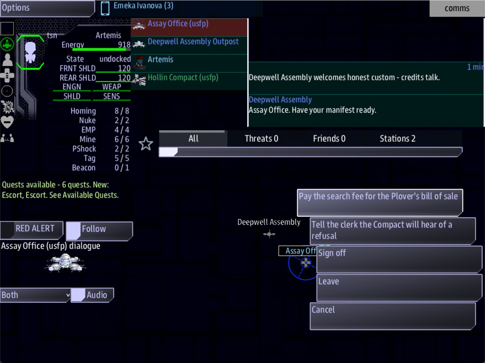

Class 6, Lecture 7 - Mixing the play styles¶
What you will have at the end¶
An act in which no two evenings in a row ask the same person to carry them. Evening 1 belongs to Science and evening 2 to Weapons. After today, evening 3 belongs to Comms: the crew has to get a bill of sale out of the Assay Office, and how they ask is remembered. And there is a race against a clock on offer at home, for a crew the Compact trusts.
You will also have a rotation: a table that says, for every evening of the act, what kind of evening it is and who is busy.

The Deepwell hail: two ways to ask for the Plover's bill of sale, and Sign off.You add a rotation to campaign.md. You turn one stub into a whole evening, and add one
job.
The video¶
About 5 minutes. Subtitles are available in the player.
Before you start¶
- Your
MyUniversemission as Lecture 6 left it.kestrel_verge.amdmatchesc6-06-reputation-arcs\example\. sbs lint MyUniversesaysclean.- The game closed, and the save deleted:
C:\Cosmos\data\missions\common_data\saves\universe_save_the_kestrel_verge_1.yaml.
Words for this lecture:
| Word | Meaning |
|---|---|
| Style | What kind of evening it is, told by who is busy |
| Rotation | The order the styles come round in |
| Interlude | An evening played in another mission, between two evenings of the campaign |
Step 1 - What a style is¶
A bridge has five or six people on it and, on any one evening, one or two of them are doing the thing the evening is about. A style is the answer to "whose evening is it?"
These are the styles you can build today, with what you already know.
| Style | The crew is | Whose evening | You write |
|---|---|---|---|
| Search | Finding something and reading it | Science | An objective that ends with scan. Terrain: on the landmark |
| Fight | Breaking something that will not move | Weapons, Engineering | An objective that ends with destroy. Guards: on the landmark |
| Talk | Getting something out of someone | Comms | An objective that ends with signal, and a hail with more than one way to ask |
| Race | Getting somewhere before a clock runs out | Helm | A job with Fails when:. Never a step of the spine. Step 4 says why |
| Politics | Changing who is an enemy | Comms, and the captain | A door on standing (Lecture 6). A ceasefire (Class 5 Lecture 3) |
| Trade | Hauling and selling | Helm, Comms | Jobs that end with recover or reach (Class 5 Lecture 6) |
And these are styles this course teaches, that a campaign in an Open Universe mission cannot use until you have taken the lecture named. Plan for them. Do not build them yet.
| Style | The crew is | When you can put it in your universe |
|---|---|---|
| Boarding | Off the bridge, in rooms, as themselves | When you have taken Class 5 Lecture 10 |
| Ruin | Flying the ship inside something, and going out in suits | When you have taken Class 5 Lecture 11 |
| Battle | In a fight with a shape: waves, a flagship | When you have taken Class 5 Lectures 12 and 13 |
| Admiral | Running fleets and worlds from above | When you have taken Class 5 Lectures 14 and 15 |
There is one honest way to have a boarding evening or a ruin evening before then. Step 5 has it.
Step 2 - The rotation¶
Three rules. They are a habit, not a law of the game.
- Never the same style twice running. Two fights in a row is one long fight with a week in the middle.
- Everyone carries an evening in every act. Count the "whose evening" column. If Helm's name is not in it, Helm has spent five weeks pressing Engage.
- A tentpole mixes two. The opening, the midpoint and the finale are where a search turns into a fight, or a talk into a race.
Add the rotation to campaign.md.
## Rotation - Act One
| Evening | Title | Style | Whose evening | On offer beside it |
|---|---|---|---|---|
| 1 | One of Five | Search, with a fight they can refuse | Science | Escort, the levy |
| 2 | Two of Five | Fight | Weapons, Engineering | Patrol, if they are trusted |
| 3 | Three of Five | Talk | Comms | The Deepwell's work |
| 4 | Four of Five | Race | Helm | Lamp Run, from the Compact |
| 5 | Five of Five | Politics | Comms, the captain | A ceasefire with the Gleaners |
| End | Five Boats | - | Everyone | The Tern's manifest, if they have earned it |
Styles I am keeping for later acts, when I have taken the lecture:
boarding (Class 5 Lecture 10), ruin (Lecture 11), battle (Lectures 12, 13), Admiral
(Lectures 14, 15).
The last column matters as much as the third. Lecture 5 said half an evening is the spine and half is the universe. This column is where you plan the second half: what the crew can do, where the spine has taken them, that is a different style from the spine.
Step 3 - A talk evening¶
Evening 3 is a stub: the crew jumps to the Assay Office and the next lead appears. Make it an evening.
Find ### [The Long Count: Three of Five](s03_go) and change its Then: line, so that
it leads to the new objective and not straight to evening 4.
Under it, above Four of Five, add the objective and the way home.
### [The Long Count: The Plover's Price](s03_ask)
---
Scope: shared
Starts when: revealed
Done when: signal plover_asked
Then: reveal s03_home
---
[](ship://starbase_industry) The Assay Office, at (3, 1)
The Assay Office has the Plover's bill of sale. Hail them and get it.
How you ask is up to you, and they will remember it. The Deepwell write down every captain who asks, and how.
### [The Long Count: Enter It Again](s03_home)
---
Scope: shared
Starts when: revealed
Done when: reach 0, 0
Then: reveal s04_go
Reward: 300 credits
---
The Plover was sold as scrap, empty, by a seller the Deepwell would not name twice. Take the bill home to Kestrel Relay.
The Plover's Price is the evening's decision, and the crew reads it at the moment they
make it, so it is a page: the Assay Office drawn as a ship at the top, with
[](ship://starbase_industry), the same hull as its landmark's Art: line, and two short
paragraphs. The second one tells them their answer will be written down, without telling
them which answer to give.
Now the conversation. It is two ways of asking for the same thing.
If you have a Deepwell Hail from Class 5 Lecture 7, find it and add these two lines
above its - [Sign off](deepwell_bye):
- [Pay the search fee for the Plover's bill of sale](deepwell_plover) ; costs 150 credits, signal plover_asked, earns deepwell by-the-book 20, earns deepwell peaceful 20
- [Tell the clerk the Compact will hear of a refusal](deepwell_plover_cold) ; signal plover_asked, earns deepwell violent 20
If you have none, add the whole record to your Dialogue chapter, with its sign-off:
### [Deepwell Hail](deepwell_hail)
---
Speaker: deepwell
When: comms
---
%{standing >= 20} Assay Office. Your account is in order, captain.
%{standing < 20} Assay Office. Have your manifest ready.
- [Pay the search fee for the Plover's bill of sale](deepwell_plover) ; costs 150 credits, signal plover_asked, earns deepwell by-the-book 20, earns deepwell peaceful 20
- [Tell the clerk the Compact will hear of a refusal](deepwell_plover_cold) ; signal plover_asked, earns deepwell violent 20
- [Sign off](deepwell_bye)
### [Deepwell Out](deepwell_bye)
---
Speaker: deepwell
---
% Assay Office out.
Either way, add the two records the answers lead to.
### [The Bill of Sale](deepwell_plover)
---
Speaker: deepwell
---
% Fee received. One ship's boat, the Plover, bought as scrap. Empty. Seller's mark withheld at the seller's request. That is all the book says.
### [The Bill, Thrown](deepwell_plover_cold)
---
Speaker: deepwell
---
% Take your copy. One boat, the Plover, bought empty as scrap. And captain: the Assembly has entered how you asked.
What makes this a talk evening and not a button: both answers finish the step, and they leave the crew in different places. Measured:
| The crew | Credits | Standing with the Deepwell |
|---|---|---|
| Pays the fee | 150 less | 20 |
| Leans on the clerk | The same | -6 |
A crew that leaned on the clerk in week 3 is greeted as a stranger in week 12. That is an arc, and it cost you one line.
The answers are there from evening 1. These two have no if, so they are on offer
at once. A crew that visits the Assay Office in week 1 can pay 150 credits for a bill of
sale they have no use for yet, and the step, still hidden, is not done. They will have
to ask again in week 3. (Lecture 2 has a way to hold an answer back until the crew has
learned a fact: if learned .... The fact can come from an answer, or from a step,
whose Then: line can reveal and teach at once.) Class 5 Lecture 7 has the same warning. Write the answer's words so that
asking early is only odd, not wrong.
Step 4 - A race, and where clocks go¶
A race is a step with Fails when: on it. Before you write one into the spine, here is
what was measured.
| What was tried | What happened |
|---|---|
A step of the spine with Fails when: 20 seconds, and a Then: reveal line. The time ran out |
The step showed Failed. The next step was not revealed, and stayed hidden |
The same, with a Penalty: |
The penalty was charged. The chain was still dead |
| A step whose time had run out, with the game closed before the ship next jumped, then continued | The step was still Failed, and its penalty was still paid. The game had saved both within seconds |
So: a clock never goes on the spine. One slow evening and the campaign has no next lead, in a save the crew has put ten weeks into. Closing the game does not undo it, and it does not reset a clock that is still running either: that comes back with the time it had left (Lecture 2).
A clock belongs on a job. A job that fails costs its penalty, and can be taken again. Add this to your Jobs chapter.
### [Lamp Run](lamp_run)
---
Tier: 2
Done when: reach 2, 2
Fails when: 10 minutes
Reward: 300 credits
Penalty: 100 credits
---
The marker lamp out by the Wren burns a cell a week. Carry a fresh one to (2, 2) before the old one dies.
 Ten minutes. Run out, and the Compact charges you for the lamp.
And put it on offer. Find the Hollin Compact in your Sides chapter and add lamp_run to
the end of its Offers: line, after a comma. In the universe as Class 5 Lecture 5 left
it, the line becomes:
Three things about this job are for the campaign.
- It goes somewhere the crew has been. (2, 2) is the Wren. The place from evening 1 is still a place in evening 4.
Tier: 2is its date. The Compact offers it at standing 20 or more. Measured: at 0 it is not on the station's list, at 20 it is there at 360 credits, at 40 at 420. Your ledger says when the crew gets to 20. That is when the race enters the campaign.- Ten minutes is a guess. With Engage, the jump itself is quick. The race is in everything a crew does before they press it. Lecture 8 times it at a real table.
A job's text is read after it is taken. On the station's list a job is only its name
and its pay. Once the crew takes it, it is in the Quest Log, and its text is drawn there
as a page, like a step's. So the clock goes in the text as well, on a line of its own:
 draws a small hourglass, one line tall, with the words beside it.
hourglass is one of the game's icon names; lint warns about a word it does not know.
Step 5 - An evening off the map¶
You wrote a boarding mission in Class 3 and a ruin in Class 4. Each is a mission of its
own, in its own folder, started with its own sbs run line. Neither is a place in The
Kestrel Verge, and until Class 5 Lectures 10 and 11 they cannot be.
You can still play one as an evening of the campaign. Call it an interlude: this week, the story says, the crew boards the hulk the Count has led them to, and you start the other mission. Be exact with yourself about what that is.
| It is | It is not |
|---|---|
| The same people at the same table, in the same story | The same save. Nothing the crew does in the interlude reaches The Kestrel Verge: no credits, no standing, no step done |
| A change of style nothing else gives you yet | A place on the map. They cannot jump to it or come back to it |
| Yours to connect, in the open of the next evening | Connected by the game |
If the interlude decides something, write the next evening's hook after it is played, and say what happened in the hook's text. That is the only bridge there is.
Step 6 - Check it¶
Save your files.
If you split your universe in Class 5 Lecture 9, one thing is different for you. It was measured on a split copy of this universe.
- A record you add to a chapter file starts with one hash, like every other record in that file. The records on this page are printed with three, for the main file.
Lint is the same for you: clean. It follows a signal from an answer in one file to
the step that waits for it in another.
Each row below was made on purpose, one change to the finished files, then linted. Where the middle column says what the game does, it was played as well.
Mistakes lint finds
| The mistake | What the game does | What lint says |
|---|---|---|
Three of Five still says Then: reveal s04_go |
Not played | A warning on The Plover's Price: "waits to be revealed, and nothing reveals it" (never-revealed) |
Fails when: 10, with no unit |
The job is offered and can be taken. It has no clock | A warning: "10 is not something the game can watch for, so this quest cannot fail this way ... A time is a number and a unit" (unknown-trigger) |
Mistakes lint cannot see
Lint says clean for every one of these.
| The mistake | What the game does |
|---|---|
signal plover_asked left off one of the two answers |
That answer takes its 150 credits, earns its standing, and the step stays open. The crew has paid for nothing |
lamp_run not added to the Offers: line |
The job is never on any station's list |
The key misspelled in the Offers: line: lamprun |
Not played |
No Tier: 2 line on Lamp Run |
The job is on offer at standing 0, at 300 credits. It is worth 5 to standing, not 10 |
A step that starts on arrival or on a timer: Starts when: reach 4, -2, or Starts when: 10 seconds |
The step never starts |
So check by eye:
- Every answer that should finish the step has
signaland the step's word. - A new job's key is in a side's
Offers:line, letter for letter. - Every step says
Starts when: at onceorStarts when: revealed.
Step 7 - Play it¶
- In the
commswindow, select the Hollin Compact's station. Lamp Run is not on its list. Hail, and pay the levy once. Select the station again: Lamp Run is there. - Take it. In the
helmwindow, engage Hollin Compact: Lamp Run in the Quest Log. The ship is at the Wren, the job showsDone, and it has paid. - Play, or walk, evenings 1 and 2, so that Three of Five is open. Engage it.
- At the Assay Office, the Quest Log has The Plover's Price. In the
commswindow, select the Assay Office, press Hail Deepwell Assembly, and choose one of the two ways to ask. - The Plover's Price shows
Done, and Enter It Again is in the list. Engage it. The ship is home, 300 credits are paid, and Four of Five is open.
What you need to know about styles
| Fact | What it means for your story |
|---|---|
An answer in a hail with no if is always on offer |
A talk evening can be "done" early by a curious crew, and it will not count. Word the answers for that, or guard them with a fact (Lecture 2) |
| A step that fails reveals nothing | No clock on the spine, ever |
| A clock that ran out is saved as failed within seconds, and a running clock is saved with its time left | Closing the game is no way out of a clock |
| A job's tier is a door | You can date a style: this kind of work arrives when the crew is trusted |
| Another mission is another save | An interlude is joined to the campaign by your writing and by nothing else |
If something goes wrong¶
| What you see | Likely cause |
|---|---|
| Evening 3 is still a stub: Four of Five appears on arrival | Three of Five still says Then: reveal s04_go |
| The Plover's Price never finishes | Neither answer has signal plover_asked, or the word is spelled differently on the step |
| No Hail Deepwell Assembly button | The hail has no When: comms line, or Speaker: is not the side's key |
| Lamp Run is never on the list | It is not in the Compact's Offers: line, or the crew's standing is under 20 |
| Lamp Run is on the list from the start | It has no Tier: 2 line |
The campaign has no next lead, and a step shows Failed |
A clock on the spine. Take the Fails when: line off for the next crew. For the save that has already failed, the step after it is stranded: Lecture 9, Step 6 gets it back, with a new key and Starts when: at once |
Exercise¶
- Write the "whose evening" for each evening of your Act One. Is anyone missing?
- Change your rotation until no style comes twice running.
- Turn one of your stubs into a talk evening. Give it two answers that both work and cost differently.
- Write one job with a clock, and give it a tier. Check your ledger: in which evening does it appear?
- Lint and play. Take the race, and fail it on purpose once. What did it cost?
- Look at your Class 3 or Class 4 mission. Is there an evening in your acts where it
would fit as an interlude? Write one line in
campaign.mdsaying what the next evening's hook would have to tell the crew.
Checkpoint¶
You are done when all five are true:
campaign.mdhas a rotation for Act One with no style twice running.sbs lint MyUniversesaysclean.- One evening's objective is finished by an answer in a hail, and there are two answers.
- A job with a clock is offered only to a trusted crew.
- No step with
Fails when:has aThen:line.
Next¶
Lecture 8 puts real people at the table. You time the evenings, write down what the crew did and did not find, and read what the game recorded.
Further reading¶
- Class 5 Lecture 6, "Jobs":
Fails when:,Penalty:andTier:on a job. - "Reputation" in the Open Universe reference: what a job's
Tier:does to standing. - Class 5 Lecture 7, "Narrative and goals": a step finished by an answer.
- Class 3 and Class 4: the missions an interlude would use.
Download this lecture's finished files (a zip of its example folder).